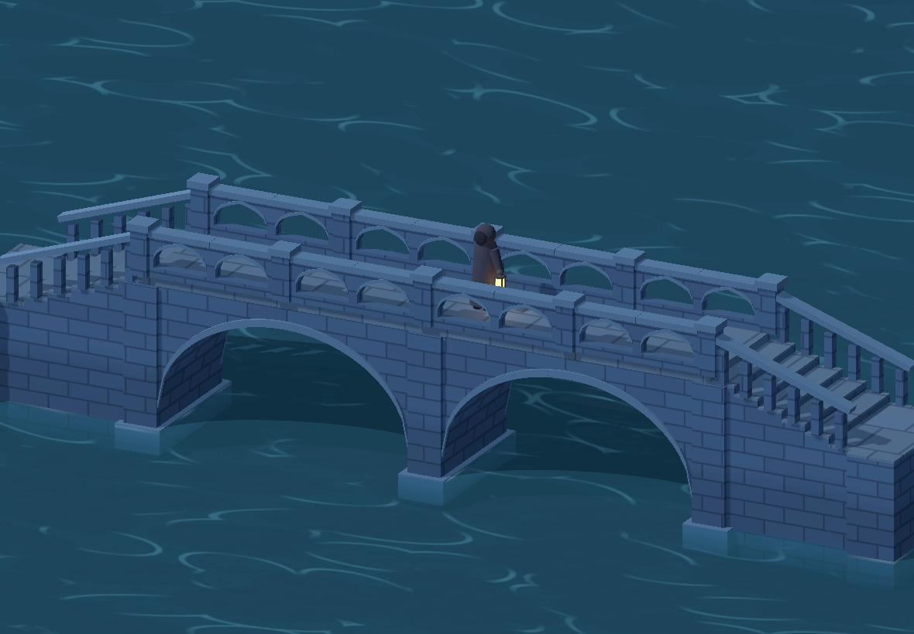
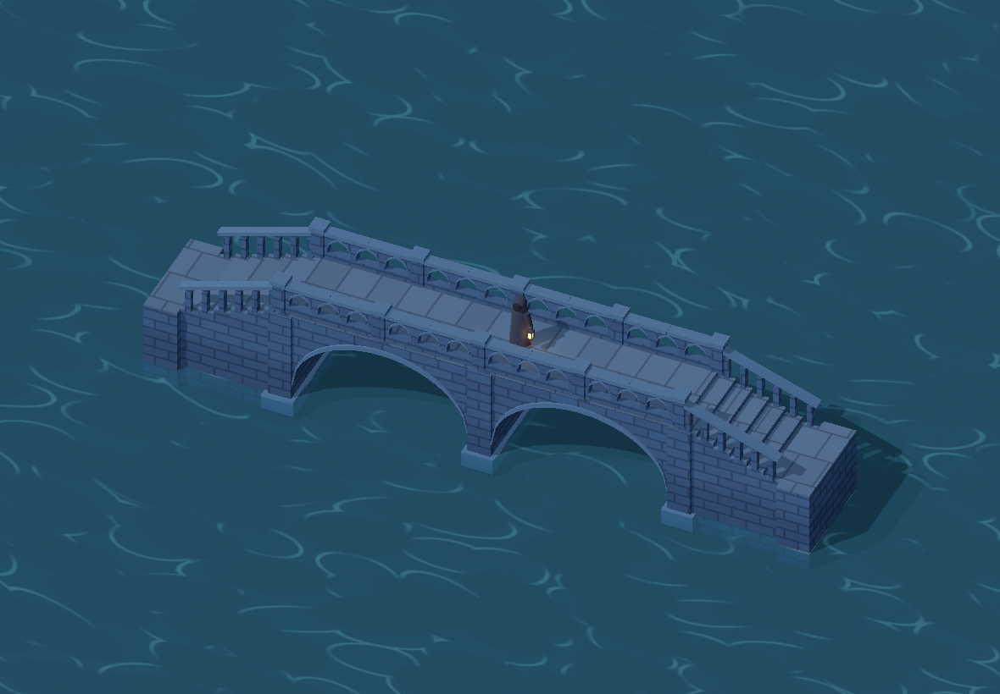

Glassvow · Act II · Parapet languageOne bridge. Three stone voices.
Compare weight, openness and rhythm. Each direction uses the same bridge, traveller, lighting, water and two camera positions.
This is a separate native 3D design sample. It has not replaced the current chapter map. The stair handrails are kept identical so the central parapets can be judged fairly.

B · Open arches — close view. Selected by the owner.
A · Quiet masonryWeight and restraint
Solid stone bays with shallow, recessed arch panels. The quietest silhouette, with the strongest sense of enclosure.
Best suited to short approaches and enclosed passages. Long stretches can still feel heavy.
B · SelectedOpen arches
Two broad pointed openings per bay, framed by substantial posts and long coping stones. The water remains visible through the bridge.
The clearest balance of Gothic character, openness and readable shape.
C · Fine arcadeA more formal edge
Three narrower pointed openings per bay create a finer, more ceremonial rhythm.

Could suit a short landmark approach. Repeating it everywhere risks visual noise.
B has been selected as the principal bridge language. The next review covers its application to bends, crossings, stairs and generated route lengths.